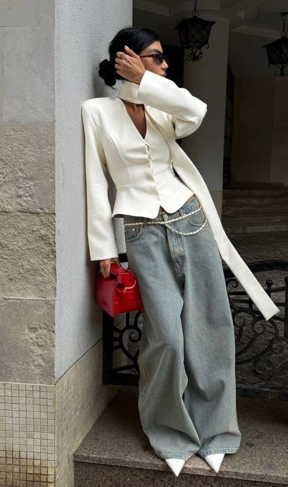
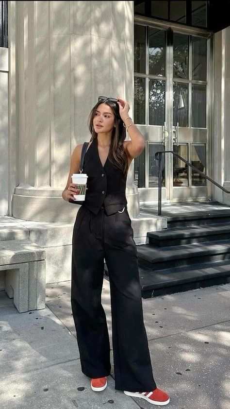
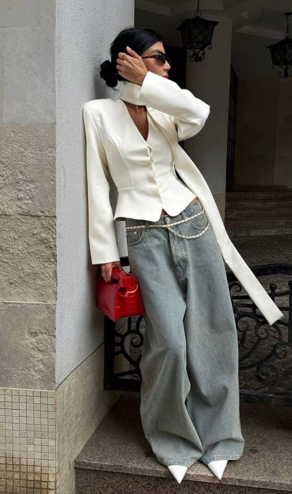
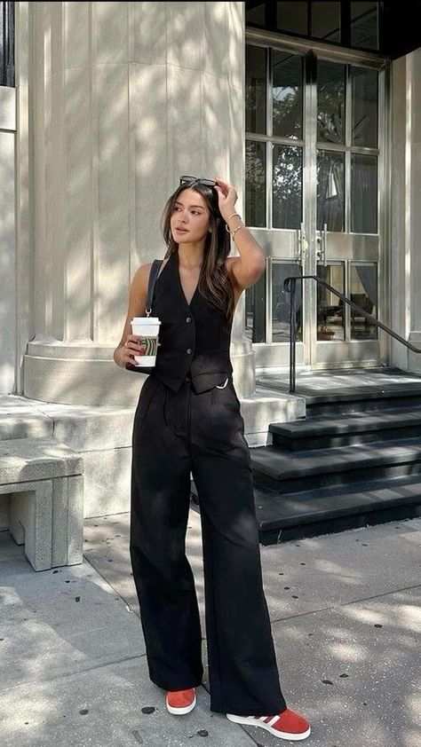
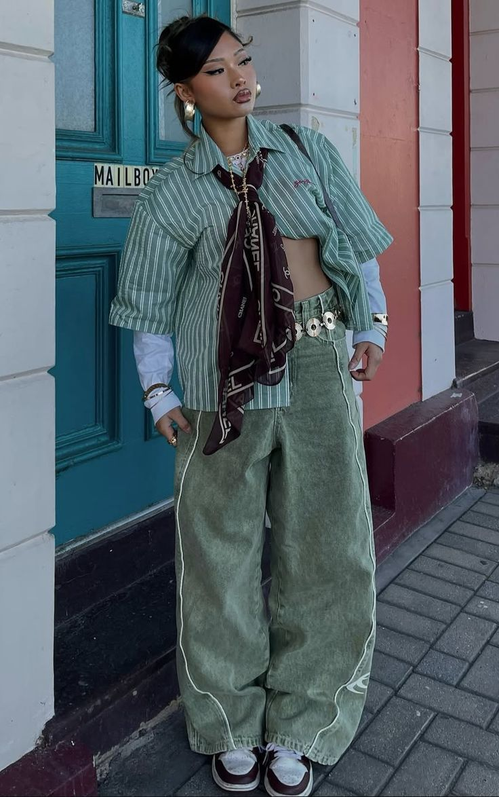
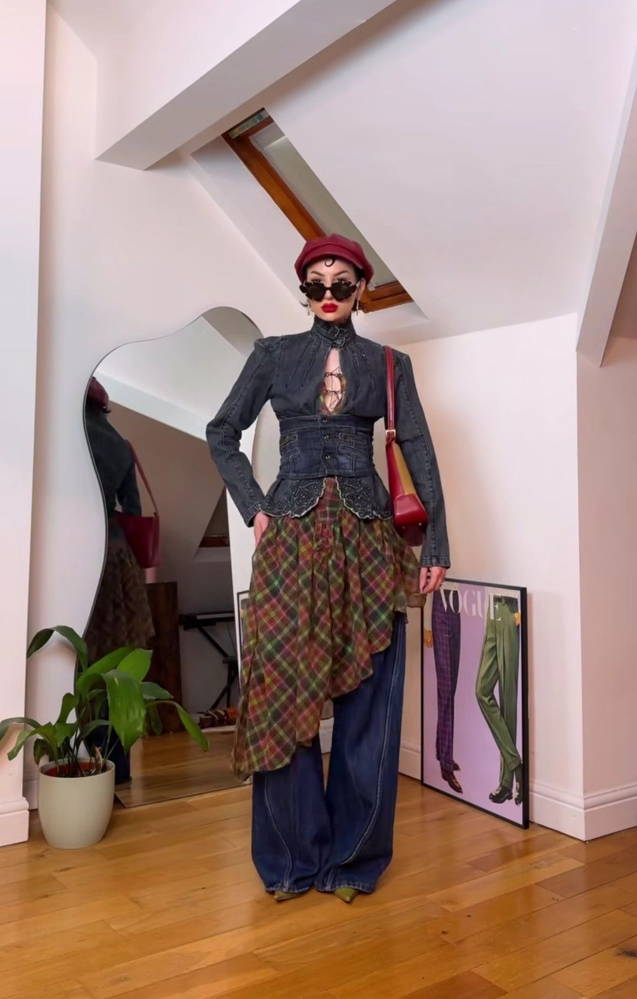
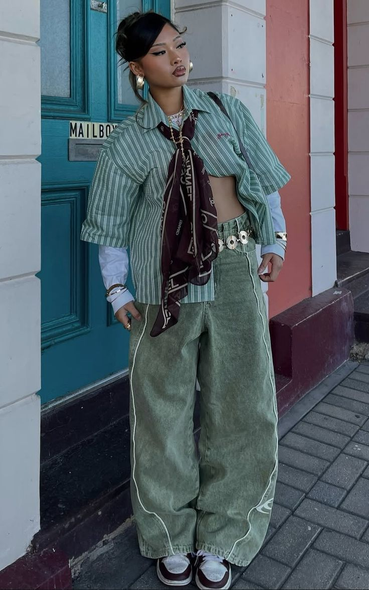
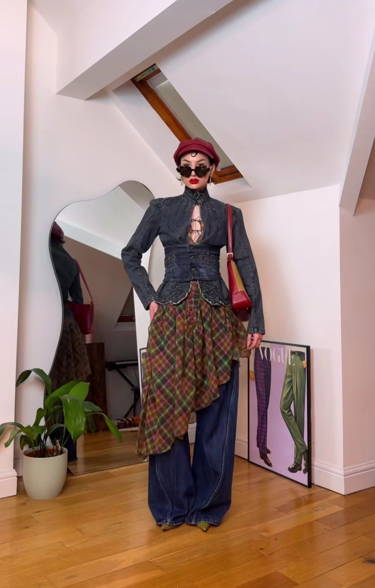

Minimalist vs Maximalist
Two philosophies. One canvas. Infinite possibilities.
Two philosophies. One canvas. Infinite possibilities.
Fashion exists on a spectrum where restraint meets expression, silence meets boldness, and simplicity dialogues with abundance. Both minimalism and maximalism have shaped Gen Z's fashion identity, offering different paths to self-expression and sustainability. Drag the slider to compare these two powerful aesthetic philosophies.
 



 



Minimalism whispers rather than shouts. This aesthetic embraces neutral palettes, clean lines, and intentional simplicity. For Gen Z, minimalism represents sustainability through longevity—investing in timeless basics that transcend trends. A minimalist wardrobe prioritizes quality over quantity, mixing and matching essential pieces to create countless outfits. This philosophy aligns with conscious consumption, reducing waste by owning fewer, better items. Minimalism proves that restraint can be powerful, that less truly can be more, and that understated elegance makes the boldest statement of all.
Minimalist Elegance
Neutral Palette
Intentional Basics
Maximalism celebrates abundance, creativity, and unapologetic self-expression. Bold colors, layered textures, and fearless pattern mixing define this aesthetic. For Gen Z, maximalism is liberation—breaking free from fashion rules and creating outfit combinations that feel authentic and joyful. Through thrifting and upcycling, maximalists build wardrobes that tell stories through color and texture. This philosophy embraces individuality and proves that fashion should be fun, expressive, and personal. Maximalism says there are no mistakes in style, only creative choices, and that self-expression knows no limits.
Maximalist Expression
Bold Colors
Pattern Mixing
Your style philosophy isn't determined by age or trends—it emerges from your values, personality, and context. Many Gen Z fashionistas reject the binary and embrace both aesthetics simultaneously. A minimalist base paired with one bold statement piece. Neutral palette with unexpected textures. Strategic simplicity with intentional maximalism. This hybrid approach combines the sustainability and clarity of minimalism with the joy and creativity of maximalism. What matters most is intentionality: understanding why you wear what you wear and ensuring your choices align with your values. Fashion becomes most powerful when it reflects your genuine self rather than following prescribed rules.